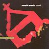

Celtic Lyrics Corner
>
Artists & Groups
>
Mouth Music
> Mo-Di

Mo-Di
(1993)
Tracks
:
1.
Birnam
2.
Hé Mandu
3.
Hoireann O
4.
Milking The Cow
5.
Waiting
6.
Crathadh 'T 'Aodaich & Zbadba
7.
Maudit
8.
So Step Off
Bonus Tracks:
9.
Hé Mandu (Mother Mix)
10.
Crathadh 'T 'Aodaich (Here & Blown Away Mix)